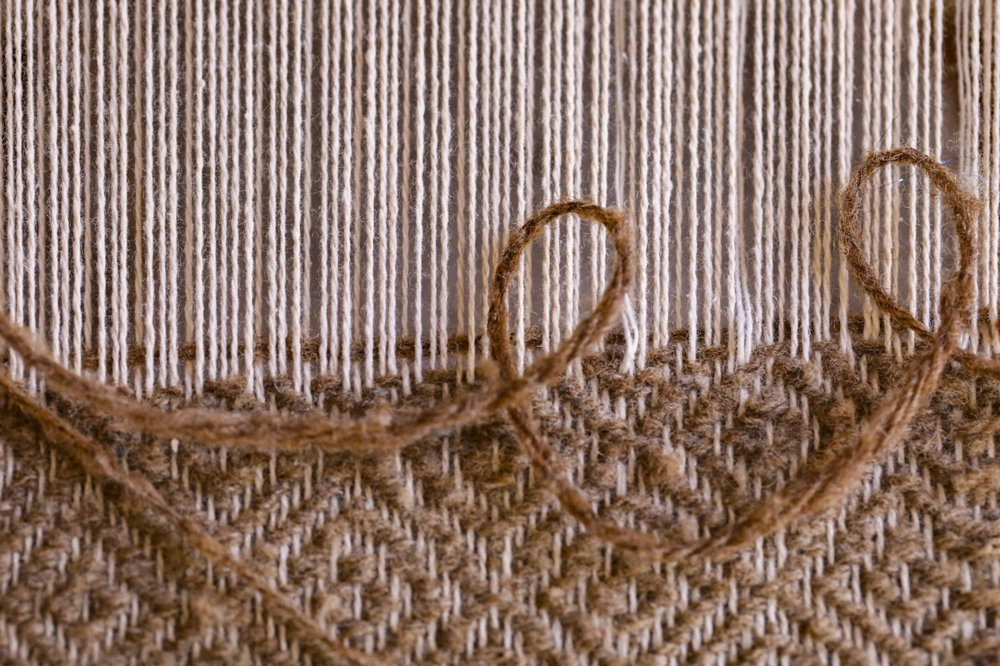

Field notes.
A few ideas that shape how I learn, make, and explain.

PromptingA checklist, not a magic spell.
Why a simple request doesn’t need five paragraphs of instructions.
Read field noteNo field notes match this search. Try another keyword or category.